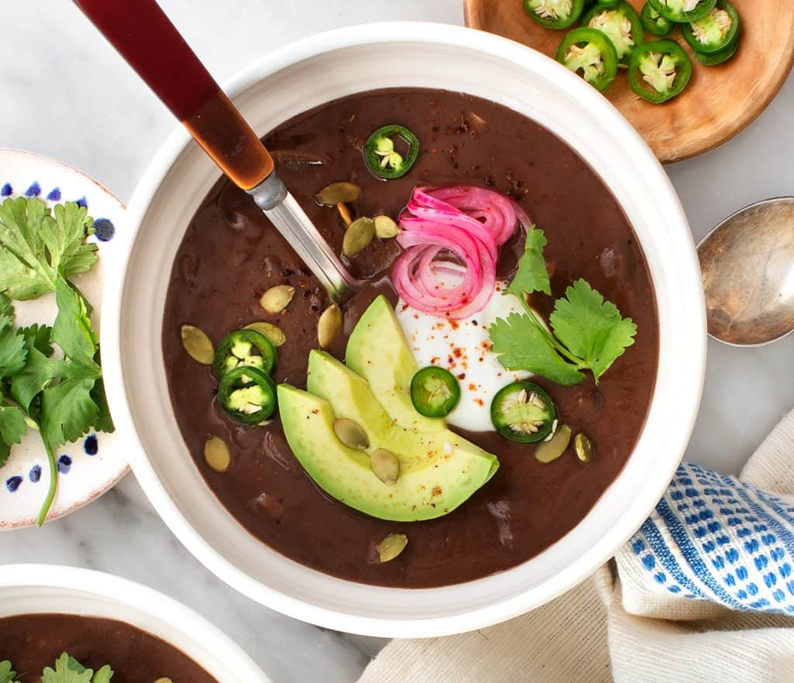

The Little Kitchen
A family food blog with easy, well tasted, family approved recipes!
Soup Ideas

- Vegan Broccoli Soup
- Butternut Squash Soup
- Black Bean Soup

Ingredients
- 1 tablespoon extra-virgin olive oil
- 1 medium yellow onion, chopped
- 1 teaspoon sea salt
- 3 garlic cloves, minced
- 1 teaspoon cumin
- 1 teaspoon coriander
- ½ teaspoon chili powder
- 2 (15-ounce) cans black beans including the liquid in the can
- 2 chipotles peppers canned in adobo sauce*, chopped, plus 2 tablespoons sauce
- 1½ cups vegetable broth
- 1 tablespoon lime juice, plus wedges for serving
Instructions
- Heat the oil in a large pot over medium heat. Add the onion and salt and sauté until the onion is translucent, about 5 minutes. Add the garlic, cumin, coriander, and chili powder and stir for 30 seconds. Stir in the beans, chipotles, adobo sauce, and broth and simmer for 30 minutes.
- Let cool slightly and transfer half of the soup mixture to a blender. Puree until smooth, then add it back to the pot with the remaining soup and stir. Stir in the lime juice. Serve with lime wedges and desired toppings.